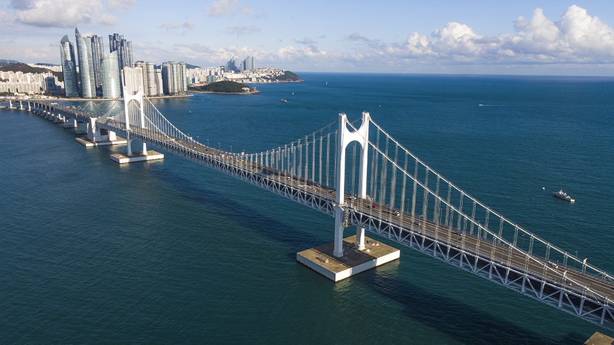

Go the the home!
Travel the Busan!
Introduce the Gwanganri

The Gwanganri Beach (Korean: 광안리 해수욕장) or Gwangan Beach (Korean: 광안 해수욕장) is a beach in Busan, South Korea. It is located at Gwangan 2(i)-dong (formerly in Gwangan-ri), Suyeong-gu, Busan Metropolitan City, west of Haeundae Beach. It sits inside a cove spanned by the Gwangan Bridge and covers 82,000 square meters over a length of 1.4 km and a width of 25 to 110 metres, in a curved in a half-moon shape with fine sand. Adjacent are alleys with restaurants, coffee shops and nightclubs. Because of its popularity, city officials are pushing for improving water quality around the beaches.[1]
The beach is near the Busan Yachting Center used for the sailing events of the 1988 Summer Olympic.
Select the place where you want to see in Busan
- Haeundae
- Gwanganri
- International market
- Gamcheon Culture Village
- Samrak Park